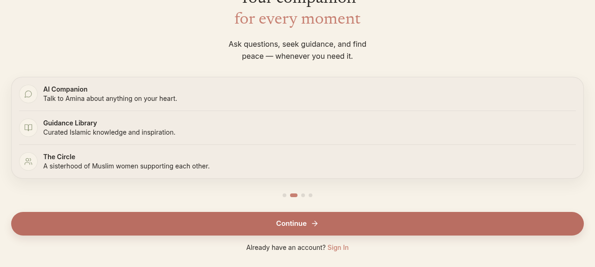
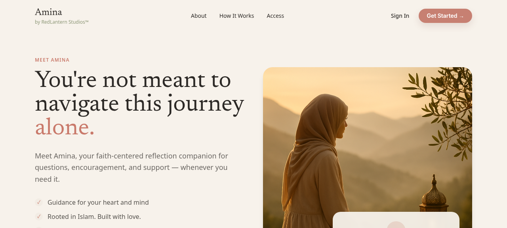
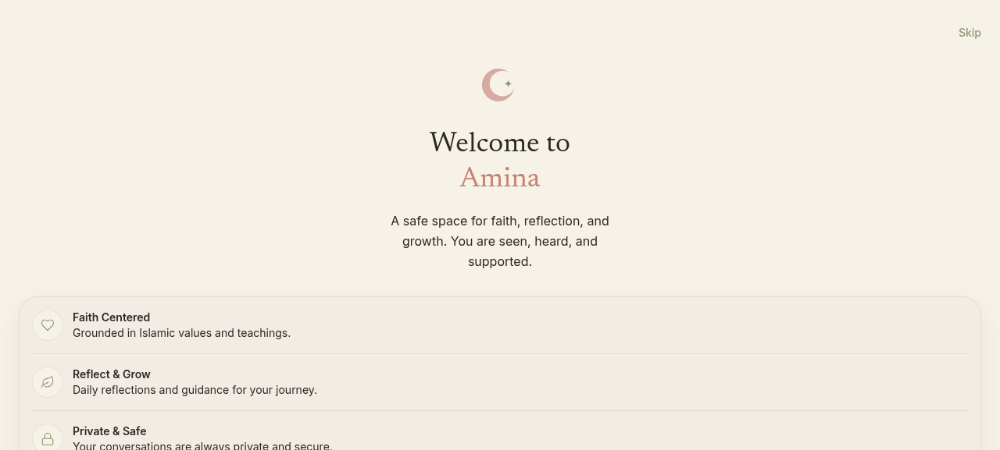
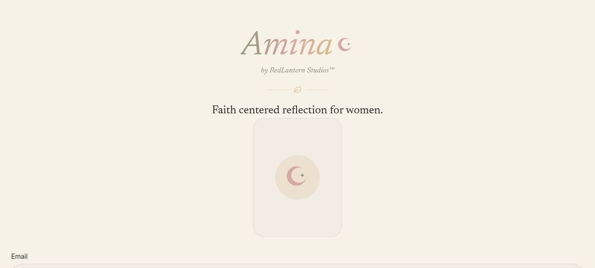

Screenshot 3: Feature Selection During Onboarding
Onboarding carousel showing three main features: AI Companion, Guidance Library, The Circle.

Screenshot 4: Account Setup
Account creation and preferences during signup flow.

User Acceptance Testing - iOS Screenshots
This comprehensive UAT report documents the current state of the Amina application through browser screenshots and functional testing. The application is a faith-centered reflection companion designed for Muslim women, featuring personal reflections, community circles, du'a walls, and AI-powered guidance.
This report includes 6 full-screen screenshots spanning the complete user journey from landing page through authenticated app experience, along with comprehensive issue documentation and iOS testing recommendations.
| Priority | Issue | Impact & Details |
|---|---|---|
| 🔴 CRITICAL | Bottom nav unresponsive | Navigation to main features (Home, Circle, Reflections, etc.) fails from home page |
| 🔴 CRITICAL | Create Circle button broken | Users cannot create new circles; essential feature blocked |
| 🔴 CRITICAL | Join with Code broken | Cannot join existing circles using invite codes; community access blocked |
| 🟠 HIGH | Submit buttons hidden | Reflection and du'a submit buttons positioned behind bottom nav bar; not accessible |
| 🟠 HIGH | Circle membership check | Access control failing; membership validation not working properly |
| 🟠 HIGH | Profile shows fake data | Trust issue: displays placeholder data (Sister / sister@example.com) instead of real user info |
| 🟡 MEDIUM | Back button (chat) broken | Cannot navigate back from chat screens; users trapped in flow |
| 🟡 MEDIUM | Hamburger menu non-functional | Sidebar menu button unresponsive; navigation menu inaccessible |
| 🟡 MEDIUM | Notification bell broken | Notification icon does nothing; user updates not accessible |
The following screenshots capture the complete Amina user experience from public landing page through authenticated app.
Screenshot 1: Public Landing Page & Sign In
First impression of Amina showing tagline and feature benefits. Sign In screen with email/password form.

Screenshot 2: Onboarding Welcome Screen
Welcome screen with key value propositions: Faith Centered, Reflect & Grow, Private & Safe.

Screenshot 3: Feature Selection During Onboarding
Onboarding carousel showing three main features: AI Companion, Guidance Library, The Circle.

Screenshot 4: Account Setup
Account creation and preferences during signup flow.
Screenshot 5: Sign Up Flow
Continue through onboarding with feature highlights and call-to-actions.

Screenshot 6: Authenticated App Home
Main home page after authentication. Shows daily reflection, circles, streaks, and main navigation.

Overall: Feature-complete with critical UI/UX issues
Authentication: ✓ Working
Onboarding: ✓ Working
Navigation: ✗ Broken (bottom nav unresponsive)
Circle Features: ✗ Create/Join broken
Personal Features: Partially working (submit buttons hidden)
Profile: Shows placeholder data instead of user info
Frontend: Next.js 16 (App Router) with React 19.2
Backend: Supabase PostgreSQL
Authentication: Email + Password with JWT tokens
Real-time: Supabase subscriptions for messages/posts
UI Library: Tailwind CSS v4
Styling: Custom design tokens (Amina brand colors)
Report Generated: June 27, 2025
Testing Type: UAT (User Acceptance Testing)
Platform: iOS / Web Browser
Screenshots Included: 6 full-page captures
Issues Documented: 9 items (3 Critical, 3 High, 3 Medium)
Test Cases: 20+ iOS workflows
Repository: https://github.com/redlanternstudios/Amina
This report is confidential and intended for iOS testing purposes only.
For questions or clarifications, please contact RedLantern Studios.